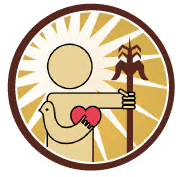

📊
Caso de éxito
Cómo ACNUR digitalizó 18.000 atenciones en Venezuela con Digisalud
Proceso de digitalización de jornadas humanitarias y los resultados logrados en 6 meses de implementación.
Digisalud ayuda a organizaciones, equipos médicos y aliados a digitalizar jornadas de salud, centralizar información y convertir datos en decisiones con impacto real.
Los programas de salud más eficaces operan con información clara, ordenada y disponible cuando más se necesita.
Registros en papel, poca trazabilidad, reportes lentos y dificultad para demostrar el impacto real de los programas.
Una plataforma integral para capturar, consultar y analizar datos de jornadas y beneficiarios en un solo lugar.
Información oportuna para planificar mejor y demostrar resultados con evidencia real ante aliados y financiadores.
Cuatro pasos que transforman la operación de tus programas de salud, desde el dato hasta la decisión.
Registra datos de pacientes y actividades desde flujos digitales, eliminando el papel y los errores de transcripción.
Toda la información en una sola plataforma. Sin silos, sin pérdida de datos. El equipo accede a la misma fuente de verdad.
Indicadores, reportes y métricas clave con visualizaciones claras para cualquier nivel de la organización.
Toma decisiones mejor informadas y demuestra resultados con evidencia real ante tus aliados y financiadores.
Resultados reales de organizaciones que gestionan sus programas con Digisalud.
Lo que dicen quienes gestionan sus programas con nuestra plataforma.
Digisalud nos permitió ordenar la información de nuestras jornadas y generar reportes mucho más útiles para nuestro equipo y aliados. Ahora tomamos decisiones con datos reales.
La trazabilidad de beneficiarios cambió completamente cómo gestionamos nuestros programas. Ahora tenemos visibilidad total en tiempo real desde el campo.
Nuestros donantes ahora reciben reportes claros con evidencia del impacto. Eso ha fortalecido enormemente la confianza y el financiamiento continuo.
Comprometidas con la salud y el impacto social en Latinoamérica.

Artículos, casos de éxito e ideas para mejorar la gestión de tus programas.
Proceso de digitalización de jornadas humanitarias y los resultados logrados en 6 meses de implementación.
Los métricas que todo coordinador de programa debe monitorear para demostrar resultados ante donantes.
Panorama actual de la transformación digital en salud pública comunitaria en la región.
Somos una organización orientada a fortalecer la gestión de programas de salud a través del uso estratégico de la tecnología y los datos.
Cada función fue diseñada para resolver un problema real en la operación de programas de salud.
Las mejores decisiones en salud son las respaldadas por información sólida y oportuna.
Trabajamos para que el impacto de los programas sea visible, medible y sostenible.
Trabajamos para que las organizaciones cuenten con herramientas digitales que hagan más eficiente la gestión de sus programas y más visible su impacto ante aliados y financiadores.
Conversemos sobre cómo Digisalud puede apoyar a tu organización. Una demo sin compromiso para ver cómo funciona con tu realidad operativa.